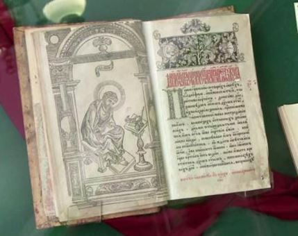
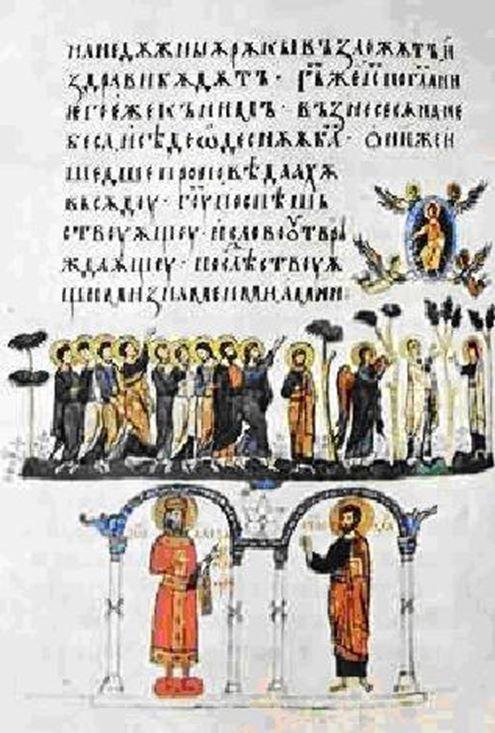

Il y a de grandes littératures telles que les Lettres anglaises, françaises et allemandes, tandis que la littérature russe est sainte1, oserons-nous dire en reprenant l’expression de Thomas Mann. Dans son Roman russe, Eugène-Melchior de Vogüé ne manque pas, lui non plus, d’observer et d’accentuer la source d’inspiration unique de toutes les créations littéraires russes :
[…] ils [écrivains russes] demeurent toujours ces chrétiens dont une voix éloquente disait naguère : « Ils n’ont pas cessé de compatir à ce pleur universel dont les hommes et les choses, tributaires du temps, alimentent le flot intarissable.» — En parcourant leurs livres les plus étranges, on devine dans le voisinage un livre régulateur vers lequel tous les autres gravitent ; c’est le vénérable volume qu’on voit à la place d’honneur, dans la Bibliothèque impériale de Pétersbourg, l’Évangile d’Ostromir de Novgorod (1056) ; au milieu des productions si récentes de la littérature nationale, ce volume symbolise leur source et leur esprit2.
En effet, pour comprendre ce qu’est la littérature russe, il importe de prendre en considération le fil conducteur chrétien y persistant dès ses origines. L’époque la plus représentative et la plus connue dans l’histoire des Lettres russe c’est le XIXe siècle, période appelé « Âge d’or » pour sa productivité littéraire. C’est à partir de cette époque-là que l’on commence à parler du génie littéraire russe qui fut rapidement associé au génie national. Rappelons-nous, à ce propos, la réflexion d’Aaron Stenberg sur l’entité que la Russie forme avec Dostoïevski :
Россия и Достоевский, Достоевский и Россия – как вопрос и ответ, как ответ и вопрос. […] Понять Достоевского – это то же, что понять Россию. Понять её – это то же, что пережить её в творческом умозрении Достоевского3.
La majorité d’œuvres littéraires postsoviétiques et contemporaines, comme en affirment de nombreux spécialistes4, se construisent elles aussi selon les valeurs des Evangiles même si l’intensité va en diminuant. Citons ici Léonid Ouspenski qui estime que le long de toute son histoire, la littérature russe a eu et continue toujours à avoir comme méthode utilisé ou style employé le réalisme symbolique sous lequel l’auteur comprend la forme de la transmission de la révélation divine le long de la réalité historique5. Mais d’où vient une telle tradition des Lettres russes ? Pourquoi le noyau chrétien de ces dernières est-il si puissant qu’il continue à être leur caractéristique principale malgré les réformes séculaires européocentriques de Pierre le Grand et le siècle rouge des Soviets ?
La littérature naît en Russie avec le baptême du pays au Xe siècle. Il s’agit de l’apparition de la culture écrite. Les moines byzantins Cyrille et Méthode élaborent, à cette époque, l’alphabet appelé cyrillique et traduisent en vieux-slave des ouvrages grecs indispensables à l’exercice des cultes orthodoxes6. Ainsi, la Parole de Dieu est considérée comme le fondement culturel de la Russie7. À ce propos, Nikolaï Strakhov affirmera, en 1895, que la religion en Russie est l’âme du peuple, et que les Saints sont l’idéal suprême de cette âme8.
La littérature en Russie médiévale était donc profondément religieuse et sans diversité de genres. Faut-il préciser qu’elle était uniquement affaire des moines. La littérature de cette époque n’avait qu’un seul sujet – le salut de l’âme humaine9.
Tandis que la littérature européenne connaissait déjà différents genres littéraires, et c’est la poésie, perçue comme « théologie cachée10 », qui enseignait, en Europe, la morale et la consolation. Ce n’est qu’au XVIIe siècle, avec les tentatives pétroviennes de l’européanisation de la Russie, que la situation change. La Russie voit naître une littérature non soumise à une fonction didactique ni religieuse. Mais, comme l’estime l’historien Alexandre Mikhaïlov, le caractère sacré que le mot avait en Russie médiévale s’est ancré si profondément dans la littérature du pays que ni l’époque séculaire de Pierre le Grand ni l’ère soviétique n’ont pu détruire cette tradition11. Toute la littérature du XIXe siècle n’est-ce pas une preuve que la base chrétienne est une caractéristique naturelle et éternelle des Lettres russes ?
Difficile d’analyser dans son ensemble la littérature russe d’aujourd’hui. On ne donne le nom à une époque que quand celle-ci commence à appartenir au passé. Mais la tradition chrétienne inébranlable des Lettres russes et surtout l’espoir veut que ces dernières continuent quoi qu’il arrive à différencier le bien du mal et à attribuer à ces phénomènes éternels leurs places respectives.
A.G.
Thomas Mann, Tonio Kröger [1903], Francfurt/Main, 1995, p. 36.
Eugène-Melchior de Vogüé, Le Roman russe [1886], Éd. critique par Jean-Louis Backès, Paris, Editions Classiques Garnier, 2010, p 110.
« Dostoïevski et la Russie, la Russie et Dostoïevski – comme la question et la réponse, la réponse et la question […]. Comprendre Dostoïevski c’est comprendre la Russie, et comprendre la Russie c’est la vivre à travers les pensées philosophiques de Dostoïevski. », Aaron Štejnberg, Sistema svobody F. M. Dostoévskogo [Système de la liberté de F. M. Dostoïevski] [1923], Paris, YMCA-press, 1980, p. 9.
Leonid Uspenskij, Aleksandr Mixajlov, Nikolaj Zaxarov, Ivan Esaulov, Alexandr Černov, Faina Kanunova, Vjačeslav Golovko, Vladimir Lukov, Aleksandr Užankov.
Leonid Uspenskij, Bogoslovie. Ikony Pravoslavnoj Cerkvi [Théologie. Icônes de l’Église Orthodoxe] [1960], Pereslavl’, Izdatel’stvo bratstva vo imja svjatogo knjazya Aleksandra Nevskogo, 1997, p. 99.
Voir à ce sujet Gail Lenhoff, « La littérature de la Russie kiévienne », in E. Etkind (dir.), G. Nivat (dir.), I. Serman (dir.), V. Strada (dir.), Histoire de la littérature russe. Des origines aux lumières, Paris, Fayard, 1992 ; L. V. Savel’eva, « Slavjanskaja azouka. Dešifrovka i interpretacija pervogo slavjanskogo teksta.» [Abécedaire slave. Décriptage et interprétation du premier texte slave], Evangel’skij tekst v russkoj literature XVIII-XX vekov. Citata, reminiscencija, motiv, sjužet, žanr, Petrozavodsk, Izdatel’stvo Petrozavodskogo gosudarstvennogo universiteta, 1994, p. 12-31.
Un rôle fondateur de l’orthodoxie dans le devenir de la littérature russe est accentué par les philologues tels que Nikolaj Zaxarov, Ivan Esaulov, Alexandr Černov, Faina Kanunova, Vjačeslav Golovko, Ju. Bërtnes.
Nikolaj Straxov, Kritičeskie stat’i ob I. S. Turgeneve i L. N. Tolstom (1862-1885) [Articles critiques sur I. Tourgueniev et L. Tolstoï (1862-1885)] [1885] , 3e édition, SPb., S. M. Nikolaev, 1895, p. 484.
Aleksandr Užankov, « K voprosu ob istoritcheskoj poetike... », art. cit., p. 8.
Aleksandr Mixajlov, op. cit., C. 20.
Voir à ce sujet Aleksandr Mixajlov, Metody i stili literatury [Méthodes et styles de la littérature], M., IMLI RAN, 2008 ; Vladimir Lukov, « Osnovnye osobennosti russkoj literatury » [Particularité principales de la littérature russe]. Adresse URL : http://www.zpu-journal.ru/e-zpu/2008/5/Lukov_russian_literature/; Aleksandr Užankov, « K voprosu ob istoričeskoj poètike drevnerusskoj slovesnosti. Postanovka problemy » [Sur une poétique historique de la littérature de la Russie ancienne], Vestnik literaturnogo instituta imeni A. M. Gor’kogo, n° 2, M., Izdatel’stvo Literaturnogo instituta, 2010.
Partager cette page